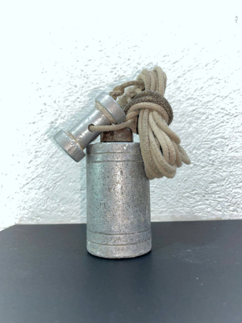
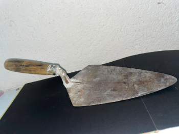
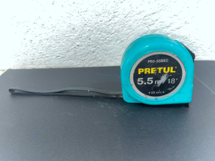
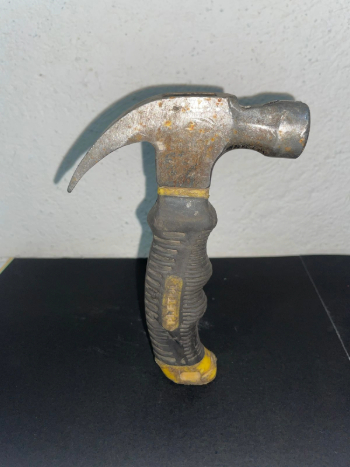
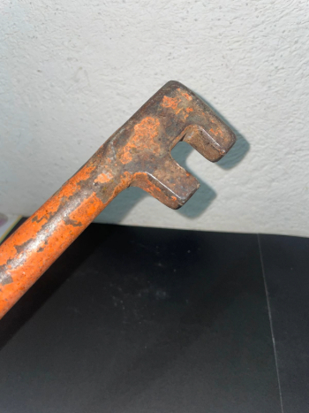
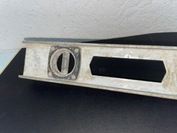

PLOMO DE NIVEL
Una plomada de albañil es un cuerpo metálico, generalmente cilíndrico (aunque en ocasiones puede que ese cilindro esté formado de varias caras planas) y acabado en un cono, que está unido a un hilo o cordel, que a su vez está unido a una placa metálica que ejerce de separador con respecto a la pared que vamos a medir.
CUCHARA
La cuchara de albañil es una herramienta de mano que consiste en una hoja de acero aleado, con espiga acodada y mango para sujetar. Ésta es utilizada en el sector de la construcción para tomar mortero y aplicarlo en pequeñas cantidades, así como para trabajar detalles con este mismo material..
METRO
El metro plegable, metro de carpintero o metro de albañil es un instrumento de medida de precisión media, que se utiliza en la construcción, carpintería y bricolaje. Entra en el grupo de medir y marcar. Puede ser de madera, color amarillo y consta de 5 pares avisagradas cada 20 cm con numeración a ambos lados de él.
MARTILLO
La forma básica del martillo consiste en un mango (comúnmente de madera) con una cabeza pesada (generalmente de metal) en su extremo. Los martillos son utilizados en diferentes profesiones y es una de las herramientas básicas junto con el cuchillo.
GRIFA
Grifa o llave grifa dobladora (bending wrench) es una herramienta manual consistente en un mango rígido con dos salientes en uno de sus extremos, utilizada en herrería y construcción para curvar y doblar varillas metálicasS.
NIVELETA
La niveleta es este aparatito, aquí como escuadrita, que tengo yo pegado al estadal con una cinta. y que nos permite mantener la verticalidad.
